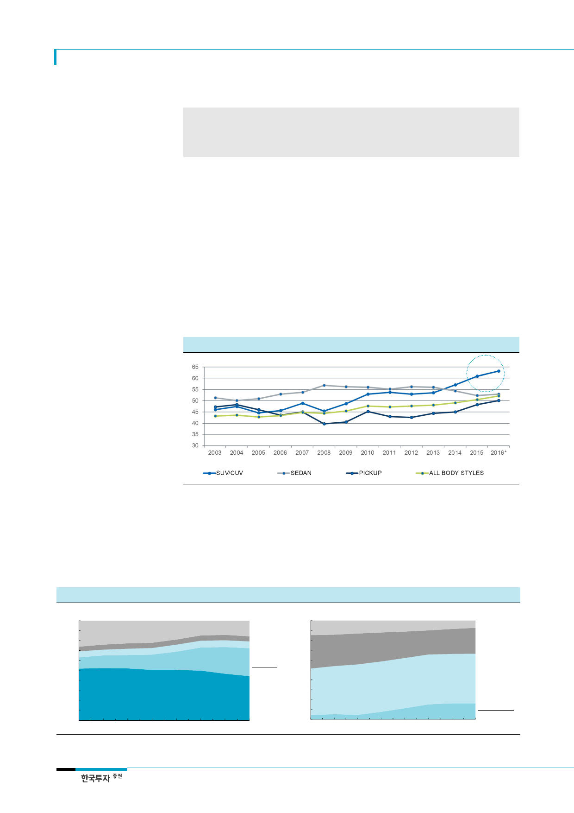

현대차(005380)
SUV의 높은 재구매율,
인기 지속될 전망
리포트 작성 목적
지역별, 업체별, 차종별 판매비중 분석. 특히 SUV 내 비중 세부분석
현대차 코나 출시의 의의 및 SUV 전략 변화 조명,
SUV가 이끄는 중장기 이익개선 및 점유율 회복의 근거 제시
I. 식을 줄 모르는 SUV의 인기
1. SUV로 간 소비자는 세단으로 돌아오지 않는다
글로벌 자동차 시장에서 SUV의 열기가 식지 않고 있다. SUV의 인기는 유가 하락, 상품성
개선(승차감/디자인/경량화/공간활용), 그리고 레저인구 증가 등에 기인한다. 글로벌 SUV
시장은 2010년 8백만대에서 2016년 2천 4백만대로 빠르게 성장해 그 비중이 11.2%에서
26.8%로 상승했다. 2017년에도 4월까지 누적 점유율이 28%로 오름세가 이어지고 있다. 게
다가 SUV는 재구매율이 세단보다 높을뿐더러 재구매율 자체가 상승하는 추세다. 즉, 한번
SUV를 경험한 소비자가 다시 SUV 구매에 나서고 있어 SUV 인기는 지속될 전망이다.
[그림 1] 한번 SUV를 타면 세단으로 돌아가지 않는다 - 차종별 재구매율(loyalty rate)
자료: IHS, 한국투자증권
SUV 인기, 소형으로 확산
2. 소형으로 확산되는 SUV 인기
특히 SUV 중에서 소형(SUV-B)의 상승세가 두드러진다(SUV 세그먼트 분류는 부록 참조).
전체 시장에서 준중형 SUV(SUV-C)의 점유율이 2010년 5.3%에서 2017년 1~4월 14.1%
로 2.6배 상승하는 동안 소형 SUV의 점유율은 0.5%에서 4.4%로 9배나 높아졌다.
[그림 2] 식을 줄 모르는 SUV의 인기 - 글로벌 세그먼트별 판매 비중 [그림 3] 소형 SUV로 인기 확산 - SUV 내 크기별 판매 비중
(%)
100
90
80
70
60
50
40
30
20
10
0
2010
2011
2012
2013
2014
2015
기타 15.6%
픽업 5.1%
MPV 6.9%
SUV 28%
세단 44.4%
2016 17.1~4
(%)
100
90
80
70
60
50
40
30
20
10
0
2010
2011
2012
2013
2014
2015
E-seg 7.3%
D-seg 26.1%
C-seg 50.3%
B-seg 15.6%
A-seg 0.5%
2016 17.1~4
자료: Marklines, 한국투자증권
자료: Marklines, 한국투자증권
2